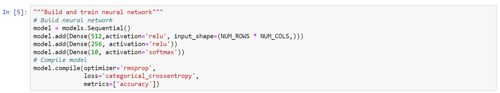
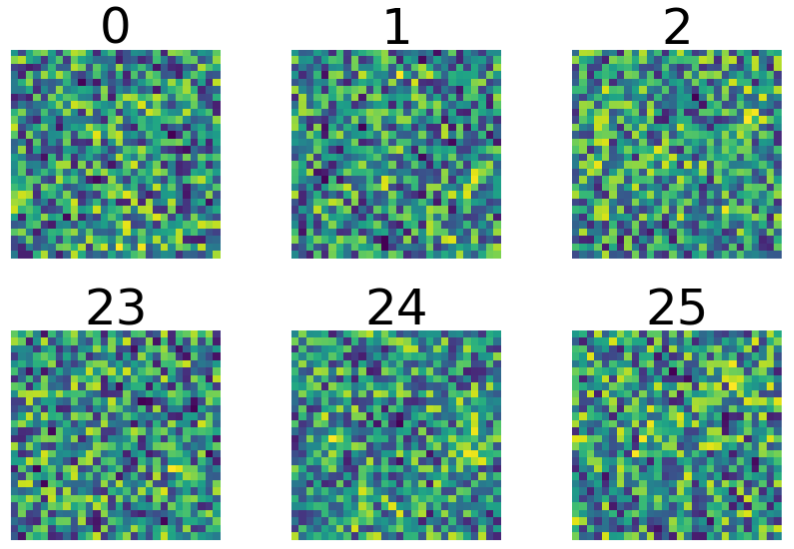
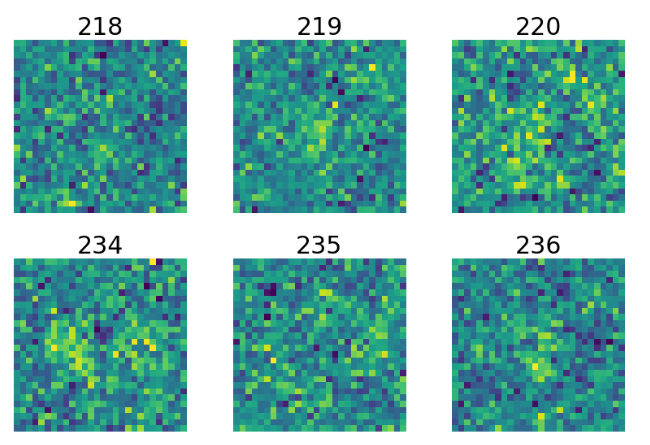
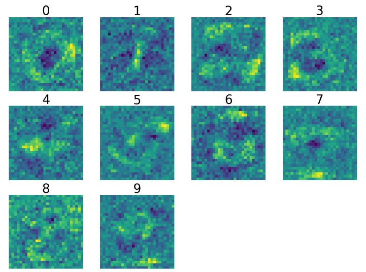
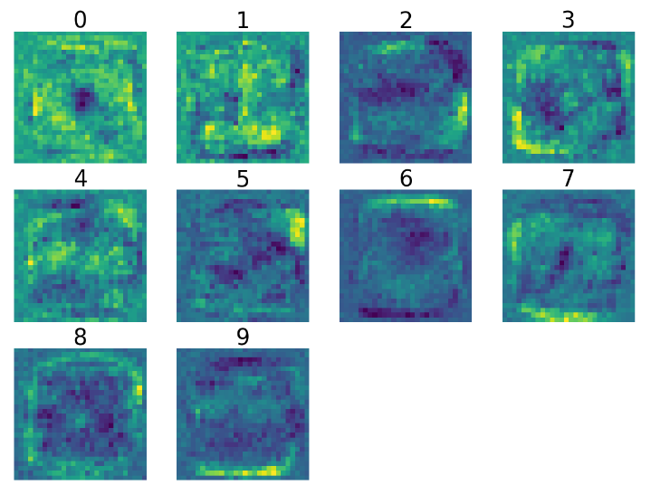

Note: This article was originally published on medium. I copied this article here to have all my writing in one place.
Building a neural network is a challenging task, but due to the abstract nature of neural nets it is entirely possible to program one without any understanding of how it works in its given context! In this article, we’ll attempt to understand what a neural network trained off of a portion of the MNIST database is actually looking for.
Resources we’ll be using
- Python (3.6.6)
- Keras
- Tensorflow (back-end for Keras)
- Matplotlib
- Numpy
- Jupyter Notebook (optional)
Note: This is not a guide to understanding Keras or designing a neural network. In fact, the code for the network we’ll be using was actually not written by me, just modified. This guide assumes you know the basics of a neural network.
Original source can be found here and all code & images can be found here
The Network

This is a simplified example of the 3 layer network that we will be visualizing. The input layer of 784 nodes represents the 784 pixels in our 28x28 image, the first hidden layer consists of 512 nodes, the second of 256, and the output layer of 10, as seen in the code below. The network outputs whichever number it believes it sees by activating a single node in the third layer, which corresponds to a number between 0–9.

What is MNIST
The Modified National Institute of Standards and Technology database is a database of thousands of 28x28 images of handwritten digits, and their associated labels (0–9). An example of a few such images can be seen below:
From Input Layer to First Hidden Layer of Nodes
We will be examining the weights of the network in an attempt to gain an understanding of what parts of an image each node in each layer is looking for. In this example, we will try and convert each pixel’s effect on whatever node we are visualizing to a gray scale value, and then display the set of all pixels as a grayscale image. To start, let’s look at the first hidden layer in our network, with a node count of 512. Here is the simplified image again:
Each connection in the network represents the left node feeding it’s value multiplied by a weight to the right node. Each connection represents a different weight (although two nodes can also have the same weight). As you can see, each input value is multiplied by a weight and fed to each node in the first hidden layer. In other words, if our input layer is of size 784 (a flattened 28x28 image), then each node in the first hidden layer has 784 inputs. This results in visualization of the first hidden layer being relatively easy — if each weight corresponds directly to a unique input pixel, then we can just display each weight as a pixel itself! We can achieve this with the following code:

model.layers[0] retrieves the first layer of our network, while .get_weights()[0] retrieves the weights, which are then added to the bias, .get_weights()[1]Unfortunately, we can’t directly visualize the 28x28 array of weights. First, weights can be negative, which means all of the negative weights would be clipped to 0 if we tried to display them in a grayscale image, and weights of -5 and -0.4 mean very different things. Additionally, we want our weights to be between 0 and 255, values for the 8-bit image matplotlib will be displaying. To do this, we will normalize our values, using the code below:
Normalization of weights is not a perfect representation of a node’s function however. For example, the weights could all be negative, which means the node would never activate, but it would still appear in the visualization as a variety of weights from 0–255 after normalizing them. However, this is still indicative of what the node is looking for (more or less), and many of the nodes activate one way or the other, so normalization still gives some very key insights that we wouldn’t have otherwise, especially if weights are very close together and would be hard to differentiate.
After throwing some matplotlib functions at the first layer images, we get 512 images, a fraction of which can be seen below:

This all seems like random noise, but when each of these nodes are multiplied by an additional weight, we start to get “feature detectors”, which we’ll explore in the second hidden layer.So don’t think of these images to be representative of anything, but rather data that only the second layer can make any sense out of. Speaking of that second layer…
From First Hidden Layer to The Second Hidden Layer
Hidden Layer 2 (or 1, if you start counting layers from 0 like Keras does) is composed of 256 nodes, each receiving the data from each of the nodes in Layer 1. However, this layer isn’t receiving input in the form of a single array of 784 values like the first layer. Instead each node is receiving 512 inputs, the activations of the nodes in the first layer. If this is the case, then how do we turn 512 weights into a representation of what our network looks for in a given 28x28 image?
Remember, each of those 512 inputs correspond to a set of 784 weights representing a certain 28x28 image the network is looking for, as seen in the previous section. This means that if a node in the second hidden layer receives 512 inputs, each input represents the 28x28 image that the corresponding node in the first hidden layer is looking for, with each input receiving a different weight. Since each node in a network just adds up each input multiplied by a weight, we can visualize these nodes by multiplying each image by it’s corresponding weight, and adding these weighted images up to get a generalized 28x28 visualization of that second node!
This process turns out to be equivalent to a dot product, which multiplies two matrices by multiplying components them summing them up. Keras stores our weights in the form of a nice little array 2 dimensional array for any given layer. In our first layer, it was in the form of a 784x512 array, each row of the array representing all the weights for a given input node. Additionally, this is why we had to transpose it for visualization by adding a .T to the end of our weights matrix, to convert it to a 512x784 array where each row represented an output node. We can take the non-transposed weight matrix, of size 784x512, and dot it (multiply each image by it’s weight and add up the images) with the second layer weight matrix, of size 512x256, to get a new weight matrix of size 784x256, which we can transpose to get the final matrix for this layer of size 256x784, with each row representing a node in our second hidden layer and each column the weight of each pixel that node uses.
After normalization, we can then perform the same matplotlib magic to plot these new images, which look a little something like this:

Still not quite what we are looking for, but we can start to see different regions of the image that the network is looking for. However, the magic really happens when the nodes are pieced together in the final layer.
From the Second Hidden Layer to the Output Layer
We have now achieved a 256x784 matrix of images. Using the same process we used for layer two, we can transpose the images (again) we used previously to get a 784x256 matrix, which we can then dot with our 256x10 matrix of weights we use in our third layer to achieve a 784x10 matrix, which we can then dot one last time to get a 10x784 matrix, where each row represents what our third layer is looking for. Let’s take a look after training the network on 500 images (as there is a much less obvious visualization when thousands are used):

As you can see, we can somewhat make out the number each node is trying to detect! This is not only useful for seeing what the network looks for, but also understanding how it extrapolates it’s results in the first place. For example, when the network is trained on 60,000 images, an interesting pattern emerges:

The network learns that, for a large portion of the MNIST dataset used in Keras, certain areas of the images are only ever written on by one or two numbers. For example, few numbers ever reach the very bottom right of the image except for 9, and bottom left for the numbers 7 and 9, as you can see in the image below:
The reason the above images display a line towards the bottom is because it tries to “catch” any writing at the bottom, and can eliminate any number that is not a 7 or a 9. Similar patterns emerge for other numbers, which helps indicate that not only does a network need a large variety of data to gain a “more accurate” understanding, but that it will always go for the easiest route to achieve the highest accuracy.
A Multi-Layer Network Isn’t Always Needed
In addition to visualization of the network with two hidden layers, I tried to see what is possible for a network with no hidden layers to accomplish, given the same data. I tweaked the model above to only have 784 inputs and 10 outputs, a direct mapping of pixels to the expected number. Using the same process for visualizing the first hidden layer, the network produced some pleasantly surprising results:
As you can see, despite having a less complex design than the multi-layer network seen above, this visualization demonstrates the power of a single node. The network demonstrates a very clear understanding of what it believes each number “looks like”, with an (arguably) more accurate understanding than the multi-layer design. These results show the idea that more nodes doesn’t always translate to more understanding, and that the power of a network is less about the number of nodes and more about the design/data used to train.
Thank you very much for reading! As mentioned above, all code can be found at https://github.com/jarbus/keras-visualization